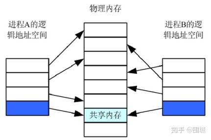
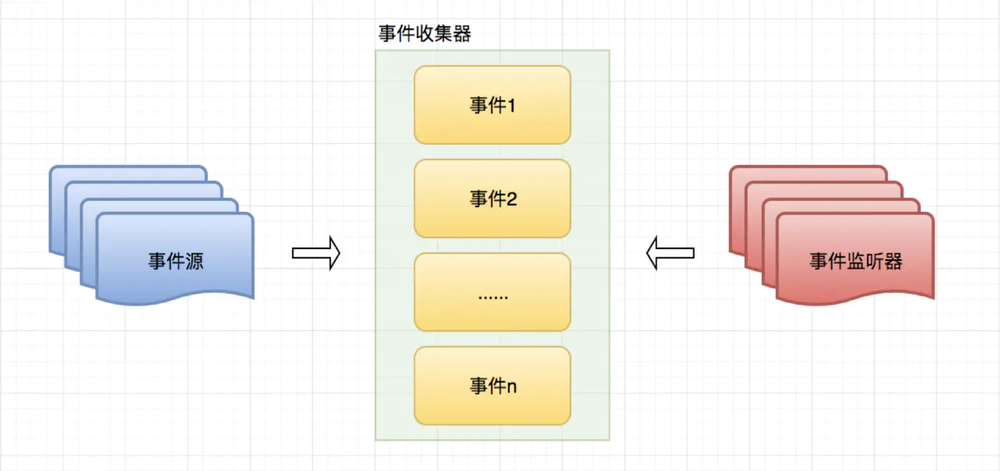
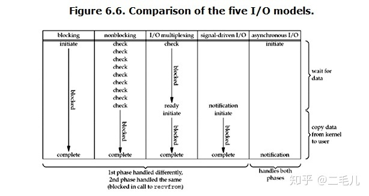

操作系统
本文最后更新于：4 个月前
线程和进程的区别是什么？
看了一遍排在前面的答案，类似”进程是资源分配的最小单位，线程是CPU调度的最小单位“这样的回答感觉太抽象，都不太容易让人理解。
做个简单的比喻：进程=火车，线程=车厢
- 线程在进程下行进（单纯的车厢无法运行）
- 一个进程可以包含多个线程（一辆火车可以有多个车厢）
- 不同进程间数据很难共享（一辆火车上的乘客很难换到另外一辆火车，比如站点换乘）
- 同一进程下不同线程间数据很易共享（A车厢换到B车厢很容易）
- 进程要比线程消耗更多的计算机资源（采用多列火车相比多个车厢更耗资源）
- 进程间不会相互影响，一个线程挂掉将导致整个进程挂掉（一列火车不会影响到另外一列火车，但是如果一列火车上中间的一节车厢着火了，将影响到所有车厢）
- 进程可以拓展到多机，进程最多适合多核（不同火车可以开在多个轨道上，同一火车的车厢不能在行进的不同的轨道上）
- 进程使用的内存地址可以上锁，即一个线程使用某些共享内存时，其他线程必须等它结束，才能使用这一块内存。（比如火车上的洗手间）－”互斥锁”
- 进程使用的内存地址可以限定使用量（比如火车上的餐厅，最多只允许多少人进入，如果满了需要在门口等，等有人出来了才能进去）－“信号量”
os/signal - 信号
基本概念
信号是事件发生时对进程的通知机制。有时也称之为软件中断。信号与硬件中断的相似之处在于打断了程序执行的正常流程，大多数情况下，无法预测信号到达的精确时间。
因为一个具有合适权限的进程可以向另一个进程发送信号，这可以称为进程间的一种同步技术。当然，进程也可以向自身发送信号。然而，发往进程的诸多信号，通常都是源于内核。引发内核为进程产生信号的各类事件如下。
- 硬件发生异常，即硬件检测到一个错误条件并通知内核，随即再由内核发送相应信号给相关进程。比如执行一条异常的机器语言指令（除 0，引用无法访问的内存区域）。
- 用户键入了能够产生信号的终端特殊字符。如中断字符（通常是 Control-C）、暂停字符（通常是 Control-Z）。
- 发生了软件事件。如调整了终端窗口大小，定时器到期等。
针对每个信号，都定义了一个唯一的（小）整数，从 1 开始顺序展开。系统会用相应常量表示。Linux 中，1-31 为标准信号；32-64 为实时信号（通过 kill -l 可以查看）。
信号达到后，进程视具体信号执行如下默认操作之一。
- 忽略信号，也就是内核将信号丢弃，信号对进程不产生任何影响。
- 终止（杀死）进程。
- 产生 coredump 文件，同时进程终止。
- 暂停（Stop）进程的执行。
- 恢复进程执行。
当然，对于有些信号，程序是可以改变默认行为的，这也就是 os/signal 包的用途。
兼容性问题：信号的概念来自于 Unix-like 系统。Windows 下只支持 os.SIGINT 信号。
进程间的通信方式：共享内存
共享内存指 (shared memory)在多处理器的计算机系统中，可以被不同中央处理器（CPU）访问的大容量内存。由于多个CPU需要快速访问存储器，这样就要对存储器进行缓存（Cache）。任何一个缓存的数据被更新后，由于其他处理器也可能要存取，共享内存就需要立即更新，否则不同的处理器可能用到不同的数据。共享内存是 Unix下的多进程之间的通信方法 ,这种方法通常用于一个程序的多进程间通信，实际上多个程序间也可以通过共享内存来传递信息。
共享内存概述
共享内存是进程间通信中最简单的方式之一。共享内存允许两个或更多进程访问同一块内存，就如同 malloc() 函数向不同进程返回了指向同一个物理内存区域的指针。当一个进程改变了这块地址中的内容的时候，其它进程都会察觉到这个更改。

上图描述的内容一样，共享内存实际上就是进程通过调用shmget（Shared Memory GET 获取共享内存）来分配一个共享内存块，然后每个进程通过shmat（Shared Memory Attach 绑定到共享内存块），将进程的逻辑虚拟地址空间指向共享内存块中。 随后需要访问这个共享内存块的进程都必须将这个共享内存绑定到自己的地址空间中去。当一个进程往一个共享内存快中写入了数据，共享这个内存区域的所有进程就可用都看到其中的内容。
共享内存的特点：
- 共享内存是进程间共享数据的一种最快的方法。一个进程向共享的内存区域写入了数据，共享这个内存区域的所有进程就可以立刻看到其中的内容。
- 使用共享内存要注意的是多个进程之间对一个给定存储区访问的互斥。若一个进程正在向共享内存区写数据，则在它做完这一步操作前，别的进程不应当去读、写这些数据。
共享内存的通信
因为所有进程共享同一块内存，共享内存在各种进程间通信方式中具有最高的效率。访问共享内存区域和访问进程独有的内存区域一样快，并不需要通过系统调用或者其它需要切入内核的过程来完成。同时它也避免了对数据的各种不必要的复制。
因为系统内核没有对访问共享内存进行同步，您必须提供自己的同步措施。例如，在数据被写入之前不允许进程从共享内存中读取信息、不允许两个进程同时向同一个共享内存地址写入数据等。解决这些问题的常用方法是通过使用信号量进行同步。
共享内存的内存模型
要使用一块共享内存，进程必须首先分配它。随后需要访问这个共享内存块的每一个进程都必须将这个共享内存绑定到自己的地址空间中。当完成通信之后，所有进程都将脱离共享内存，并且由一个进程释放该共享内存块。理解 Linux 系统内存模型可以有助于解释这个绑定的过程。在 Linux 系统中，每个进程的虚拟内存是被分为许多页面的。这些内存页面中包含了实际的数据。每个进程都会维护一个从内存地址到虚拟内存页面之间的映射关系。尽管每个进程都有自己的内存地址，不同的进程可以同时将同一个内存页面映射到自己的地址空间中，从而达到共享内存的目的。
分配一个新的共享内存块会创建新的内存页面。因为所有进程都希望共享对同一块内存的访问，只应由一个进程创建一块新的共享内存。再次分配一块已经存在的内存块不会创建新的页面，而只是会返回一个标识该内存块的标识符。一个进程如需使用这个共享内存块，则首先需要将它绑定到自己的地址空间中。这样会创建一个从进程本身虚拟地址到共享页面的映射关系。当对共享内存的使用结束之后，这个映射关系将被删除。当再也没有进程需要使用这个共享内存块的时候，必须有一个（且只能是一个）进程负责释放这个被共享的内存页面。
进程间通信和线程间通信的几种方式
_exit和exit的区别
fork与vfork理解
| 系统调用 | 描述 |
|---|---|
| fork | fork创造的子进程是父进程的完整副本，复制了父亲进程的资源，包括内存的内容task_struct内容 |
| vfork | vfork创建的子进程与父进程共享数据段,而且由vfork()创建的子进程将先于父进程运行 |
| clone | Linux上创建线程一般使用的是pthread库 实际上linux也给我们提供了创建线程的系统调用，就是clone |
再理解
为什么会有vfork，因为以前的fork 很傻， 它创建一个子进程时，将会创建一个新的地址空间，并且拷贝父进程的资源，而往往在子进程中会执行exec 调用，这样，前面的拷贝工作就是白费力气了，这种情况下，聪明的人就想出了vfork，它产生的子进程刚开始暂时与父进程共享地址空间（其实就是线程的概念了），因为这时候子进程在父进程的地址空间中运行，所以子进程不能进行写操作，并且在儿子 霸占”着老子的房子时候，要委屈老子一下了，让他在外面歇着（阻塞），一旦儿子执行了exec 或者exit 后，相 于儿子买了自己的房子了，这时候就相于分家了。
再再理解
fork和vfork的区别：
fork( )的子进程拷贝父进程的数据段和代码段；vfork( )的子进程与父进程共享数据段
fork( )的父子进程的执行次序不确定；vfork( )保证子进程先运行，在调用exec或exit之前与父进程数据是共享的，在它调用exec或exit之后父进程才可能被调度运行。
vfork( )保证子进程先运行，在它调用exec或exit之后父进程才可能被调度运行。如果在调用这两个函数之前子进程依赖于父进程的进一步动作，则会导致死锁。
写时复制,当需要改变共享数据段中变量的值，则拷贝父进程。
再再再理解
操作系统中的页表寻址
页式内存管理，内存分成固定长度的一个个页片。操作系统为每一个进程维护了一个从虚拟地址到物理地址的映射关系的数据结构，叫页表，页表的内容就是该进程的虚拟地址到物理地址的一个映射。页表中的每一项都记录了这个页的基地址。通过页表，由逻辑地址的高位部分先找到逻辑地址对应的页基地址，再由页基地址偏移一定长度就得到最后的物理地址，偏移的长度由逻辑地址的低位部分决定。一般情况下，这个过程都可以由硬件完成，所以效率还是比较高的。页式内存管理的优点就是比较灵活，内存管理以较小的页为单位，方便内存换入换出和扩充地址空间。
Linux最初的两级页表机制：
两级分页机制将32位的虚拟空间分成三段，低十二位表示页内偏移，高20分成两段分别表示两级页表的偏移。
- PGD(Page Global Directory): 最高10位，全局页目录表索引
- PTE(Page Table Entry)：中间10位，页表入口索引
当在进行地址转换时，结合在CR3寄存器中存放的页目录(page directory, PGD)的这一页的物理地址，再加上从虚拟地址中抽出高10位叫做页目录表项(内核也称这为pgd)的部分作为偏移, 即定位到可以描述该地址的pgd；从该pgd中可以获取可以描述该地址的页表的物理地址，再加上从虚拟地址中抽取中间10位作为偏移, 即定位到可以描述该地址的pte；在这个pte中即可获取该地址对应的页的物理地址, 加上从虚拟地址中抽取的最后12位，即形成该页的页内偏移, 即可最终完成从虚拟地址到物理地址的转换。从上述过程中，可以看出，对虚拟地址的分级解析过程，实际上就是不断深入页表层次，逐渐定位到最终地址的过程，所以这一过程被叫做page talbe walk。
Linux的三级页表机制：
当X86引入物理地址扩展(Pisycal Addrress Extension, PAE)后，可以支持大于4G的物理内存(36位），但虚拟地址依然是32位，原先的页表项不适用，它实际多4 bytes被扩充到8 bytes，这意味着，每一页现在能存放的pte数目从1024变成512了(4k/8)。相应地，页表层级发生了变化，Linus新增加了一个层级，叫做页中间目录(page middle directory, PMD), 变成：
字段 描述 位数
cr3 指向一个PDPT crs寄存器存储
PGD 指向PDPT中4个项中的一个 位31~30
PMD 指向页目录中512项中的一个 位29~21
PTE 指向页表中512项中的一个 位20~12
page offset 4KB页中的偏移 位11~0
现在就同时存在2级页表和3级页表，在代码管理上肯定不方便。巧妙的是，Linux采取了一种抽象方法：所有架构全部使用3级页表: 即PGD -> PMD -> PTE。那只使用2级页表(如非PAE的X86)怎么办？
办法是针对使用2级页表的架构，把PMD抽象掉，即虚设一个PMD表项。这样在page table walk过程中，PGD本直接指向PTE的，现在不了，指向一个虚拟的PMD，然后再由PMD指向PTE。这种抽象保持了代码结构的统一。
Linux的四级页表机制：
硬件在发展，3级页表很快又捉襟见肘了，原因是64位CPU出现了, 比如X86_64， 它的硬件是实实在在支持4级页表的。它支持48位的虚拟地址空间1。如下：
字段 描述 位数
PML4 指向一个PDPT 位47~39
PGD 指向PDPT中4个项中的一个 位38~30
PMD 指向页目录中512项中的一个 位29~21
PTE 指向页表中512项中的一个 位20~12
page offset 4KB页中的偏移 位11~0
Linux内核针为使用原来的3级列表(PGD->PMD->PTE)，做了折衷。即采用一个唯一的，共享的顶级层次，叫PML4。这个PML4没有编码在地址中，这样就能套用原来的3级列表方案了。不过代价就是，由于只有唯一的PML4, 寻址空间被局限在(239=)512G, 而本来PML4段有9位, 可以支持512个PML4表项的。现在为了使用3级列表方案，只能限制使用一个， 512G的空间很快就又不够用了，解决方案呼之欲出。
在2004年10月，当时的X86_64架构代码的维护者Andi Kleen提交了一个叫做4level page tables for Linux的PATCH系列，为Linux内核带来了4级页表的支持。在他的解决方案中，不出意料地，按照X86_64规范，新增了一个PML4的层级, 在这种解决方案中，X86_64拥一个有512条目的PML4, 512条目的PGD, 512条目的PMD, 512条目的PTE。对于仍使用3级目录的架构来说，它们依然拥有一个虚拟的PML4,相关的代码会在编译时被优化掉。 这样，就把Linux内核的3级列表扩充为4级列表。这系列PATCH工作得不错，不久被纳入Andrew Morton的-mm树接受测试。不出意外的话，它将在v2.6.11版本中释出。但是，另一个知名开发者Nick Piggin提出了一些看法，他认为Andi的Patch很不错，不过他认为最好还是把PGD作为第一级目录，把新增加的层次放在中间，并给出了他自己的Patch:alternate 4-level page tables patches。Andi更想保持自己的PATCH, 他认为Nick不过是玩了改名的游戏，而且他的PATCH经过测试很稳定，快被合并到主线了，不宜再折腾。不过Linus却表达了对Nick Piggin的支持，理由是Nick的做法conceptually least intrusive。毕竟作为Linux的扛把子，稳定对于Linus来说意义重大。最终，不意外地，最后Nick Piggin的PATCH在v2.6.11版本中被合并入主线。在这种方案中，4级页表分别是：PGD -> PUD -> PMD -> PTE。
参考：
线程同步-条件变量
与互斥锁不同，条件变量是用来等待而不是用来上锁的。条件变量用来自动阻塞一个线程，直到某特殊情况发生为止。通常条件变量和互斥锁同时使用。
条件变量使我们可以睡眠等待某种条件出现。条件变量是利用线程间共享的全局变量进行同步的一种机制，主要包括两个动作：一个线程等待”条件变量的条件成立”而挂起；另一个线程使”条件成立”（给出条件成立信号）。
条件的检测是在互斥锁的保护下进行的。如果一个条件为假，一个线程自动阻塞，并释放等待状态改变的互斥锁。如果另一个线程改变了条件，它发信号给关联的条件变量，唤醒一个或多个等待它的线程，重新获得互斥锁，重新评价条件。如果两进程共享可读写的内存，条件变量可以被用来实现这两进程间的线程同步。
条件变量与互斥锁、信号量的区别
1.互斥锁必须总是由给它上锁的线程解锁，信号量的挂出即不必由执行过它的等待操作的同一进程执行。一个线程可以等待某个给定信号灯，而另一个线程可以挂出该信号灯。
2.互斥锁要么锁住，要么被解开（二值状态，类型二值信号量）。
3.由于信号量有一个与之关联的状态（它的计数值），信号量挂出操作总是被记住。然而当向一个条件变量发送信号时，如果没有线程等待在该条件变量上，那么该信号将丢失。
4.互斥锁是为了上锁而设计的，条件变量是为了等待而设计的，信号灯即可用于上锁，也可用于等待，因而可能导致更多的开销和更高的复杂性。
参考:点俺，俺很棒
进程与线程的区别
1）进程是cpu资源分配的最小单位，线程是cpu调度的最小单位。
2）进程有独立的系统资源，而同一进程内的线程共享进程的大部分系统资源,包括堆、代码段、数据段，每个线程只拥有一些在运行中必不可少的私有属性，比如tcb,线程Id,栈、寄存器。
3）一个进程崩溃，不会对其他进程产生影响；而一个线程崩溃，会让同一进程内的其他线程也死掉。
4）进程在创建、切换和销毁时开销比较大，而线程比较小。进程创建的时候需要分配系统资源，而销毁的的时候需要释放系统资源。进程切换需要分两步：切换页目录、刷新TLB以使用新的地址空间；切换内核栈和硬件上下文（寄存器）；而同一进程的线程间逻辑地址空间是一样的，不需要切换页目录、刷新TLB。
5）进程间通信比较复杂，而同一进程的线程由于共享代码段和数据段，所以通信比较容易。
Linux的4种锁机制
互斥锁：
mutex，用于保证在任何时刻，都只能有一个线程访问该对象。当获取锁操作失败时，线程会进入睡眠，等待锁释放时被唤醒
读写锁：
rwlock，分为读锁和写锁。处于读操作时，可以允许多个线程同时获得读操作。但是同一时刻只能有一个线程可以获得写锁。其它获取写锁失败的线程都会进入睡眠状态，直到写锁释放时被唤醒。 注意：写锁会阻塞其它读写锁。当有一个线程获得写锁在写时，读锁也不能被其它线程获取；写者优先于读者（一旦有写者，则后续读者必须等待，唤醒时优先考虑写者）。适用于读取数据的频率远远大于写数据的频率的场合。
自旋锁：
spinlock，在任何时刻同样只能有一个线程访问对象。但是当获取锁操作失败时，不会进入睡眠，而是会在原地自旋，直到锁被释放。这样节省了线程从睡眠状态到被唤醒期间的消耗，在加锁时间短暂的环境下会极大的提高效率。但如果加锁时间过长，则会非常浪费CPU资源。
再分析
spin_lock用于阻止在不同CPU上的执行单元对共享资源的同时访问以及不同进程上下文互相抢占导致的对共享资源的非同步访问，而中断失效和软中断失效却是为了阻止在同一CPU上软中断或中断对共享资源的非同步访问。
自旋锁使用及注意事项
自旋锁的注意事项：
自旋锁使CPU处于忙等状态，因此临界区执行时间应该尽量短；
自旋锁是不可重入的；
自旋锁保护的临界区不应该有睡眠操作：
1）对于开中断的自旋锁来说，睡眠操作可能发生如下两种情况：
a. 死锁：任务A获得自旋锁之后睡眠，接着又发生了中断，而中断处理程序内部又打算获取同一个自旋锁，则此时会发生自死锁 —— 自旋锁是不可重入的。
b. CPU浪费：倘若中断处理程序内部没有获取同一个自旋锁的操作，则理论上可以产生调度。假设进程B打算获取CPU的控制权，但由于此时是关抢占的（因为进程A还没有解自旋锁，此时依旧处于自旋锁的临界区中），导致进程B无法运行。也就是说CPU将无法运行任何程序，一直处于无事可做的状态，造成CPU的浪费。2）对于顺带关中断的自旋锁来说，显而易见在临界区内使不能睡眠的，因为唤醒一个睡眠的进程依赖于调度器，而调度器是通过时钟中断来判断合适唤醒进程的，倘若在关闭中断的时候进程睡眠，则调度器将再也无法收到时钟中断（因为开中断的操作也是由该进程控制的），从而永远都无法唤醒睡眠的进程。也就是说该进程将处于睡死状态。
简单来说，自旋锁的初衷就是：在短期间内进行轻量级的锁定。一个被争用的自旋锁使得请求它的线程在等待锁重新可用的期间进行自旋(特别浪费处理器时间)，所以自旋锁不应该被持有时间过长。如果需要长时间锁定的话, 最好使用信号量。
RCU：
即read-copy-update，在修改数据时，首先需要读取数据，然后生成一个副本，对副本进行修改。修改完成后，再将老数据update成新的数据。使用RCU时，读者几乎不需要同步开销，既不需要获得锁，也不使用原子指令，不会导致锁竞争，因此就不用考虑死锁问题了。而对于写者的同步开销较大，它需要复制被修改的数据，还必须使用锁机制同步并行其它写者的修改操作。在有大量读操作，少量写操作的情况下效率非常高。
信号量/互斥体和自旋锁的区别
信号量/互斥体允许进程睡眠属于睡眠锁，自旋锁则不允许调用者睡眠，而是让其循环等待，所以有以下区别应用 :
- 信号量和读写信号量适合于保持时间较长的情况，它们会导致调用者睡眠，因而自旋锁适合于保持时间非常短的情况
- 自旋锁可以用于中断，不能用于进程上下文(会引起死锁)。而信号量不允许使用在中断中，而可以用于进程上下文
- 自旋锁保持期间是抢占失效的，自旋锁被持有时，内核不能被抢占，而信号量和读写信号量保持期间是可以被抢占的
另外需要注意的是:
- 信号量锁保护的临界区可包含可能引起阻塞的代码，而自旋锁则绝对要避免用来保护包含这样代码的临界区，因为阻塞意味着要进行进程的切换，如果进程被切换出去后，另一进程企图获取本自旋锁，死锁就会发生。
- 在你占用信号量的同时不能占用自旋锁，因为在你等待信号量时可能会睡眠，而在持有自旋锁时是不允许睡眠的。
信号量和互斥体之间的区别
概念上的区别：
信号量：是进程间（线程间）同步用的，一个进程（线程）完成了某一个动作就通过信号量告诉别的进程（线程），别的进程（线程）再进行某些动作。有二值和多值信号量之分。
互斥锁：是线程间互斥用的，一个线程占用了某一个共享资源，那么别的线程就无法访问，直到这个线程离开，其他的线程才开始可以使用这个共享资源。可以把互斥锁看成二值信号量。
上锁时：
信号量: 只要信号量的value大于0，其他线程就可以sem_wait成功，成功后信号量的value减一。若value值不大于0，则sem_wait阻塞，直到sem_post释放后value值加一。
互斥锁: 只要被锁住，其他任何线程都不可以访问被保护的资源。如果没有锁，获得资源成功，否则进行阻塞等待资源可用。
使用场所： 信号量主要适用于进程间通信，当然，也可用于线程间通信。而互斥锁只能用于线程间通信。
参考:
软链接和硬链接区别
到这里我们其实可以总结一下了：
- 硬链接： 与普通文件没什么不同，
inode都指向同一个文件在硬盘中的区块 - 软链接： 保存了其代表的文件的绝对路径，是另外一种文件，在硬盘上有独立的区块，访问时替换自身路径。
静态变量初始化
静态变量的内存分配和初始化
对于C语言的全局和静态变量，不管是否被初始化，其内存空间都是全局的；如果初始化，那么初始化发生在任何代码执行之前，属于编译期初始化。由于内置变量无须资源释放操作，仅需要回收内存空间，因此程序结束后全局内存空间被一起回收，不存在变量依赖问题，没有任何代码会再被执行！
C++引入了对象，这给全局变量的管理带领新的麻烦。C++的对象必须有构造函数生成，并最终执行析构操作。由于构造和析构并非分配内存那么简单，可以说相当复杂，因此何时执行全局或静态对象（C++）的构造和析构呢？这需要执行相关代码，无法在编译期完成，因此C++标准规定：全局或静态对象当且仅当对象首次用到时才进行构造，并通过atexit()来管理对象的生命期，在程序结束之后（如调用exit，main），按FILO顺序调用相应的析构操作！
总结：
全局变量、文件域的静态变量和类的静态成员变量在main执行之前的静态初始化过程中分配内存并初始化；局部静态变量（一般为函数内的静态变量）在第一次使用时分配内存并初始化。这里的变量包含内置数据类型和自定义类型的对象。
静态变量初始化的线程安全性说明
非局部静态变量一般在main执行之前的静态初始化过程中分配内存并初始化，可以认为是线程安全的；
局部静态变量在编译时，编译器的实现一般是在初始化语句之前设置一个局部静态变量的标识来判断是否已经初始化，运行的时候每次进行判断，如果需要初始化则执行初始化操作，否则不执行。这个过程本身不是线程安全的。
参考:静态变量初始化的时机
用户态和内核态的区别
用户态和内核态是操作系统的两种运行级别，两者最大的区别就是特权级不同。用户态拥有最低的特权级，内核态拥有较高的特权级。运行在用户态的程序不能直接访问操作系统内核数据结构和程序。内核态和用户态之间的转换方式主要包括：系统调用，异常和中断。
事件驱动
个人理解：事件驱动(even-driven)，字面理解即：由事件去触发某个或者一系列动作。
百度百科： 从事件角度说，事件驱动程序的基本结构是由一个事件收集器、一个事件发送器和一个事件处理器组成。 事件收集器专门负责收集所有事件，包括来自用户的（如鼠标、键盘事件等）、来自硬件的（如时钟事件等）和来自软件的（如操作系统、应用程序本身等）。 事件发送器负责将收集器收集到的事件分发到目标对象中。 事件处理器做具体的事件响应工作。
1 | |
或许这个栗子符合你，但是对我来说根本不可能🙈，闹钟响了压根不会起床、不起床听不到上课铃、不去上课也听不到下课铃，GG
转入正题，事件驱动的应用无处不在比如：spring、netty、zookeeper、mq，而且事件【event】和监听器【listener】都是成对存在的，单个存在是没有意义的，下面手动实现一个事件驱动模型。
那么事件驱动模型的组成是怎样的呢？
事件驱动模型
先去百度了一张模型图，当当当当~

说实话，图不是自己画的就是不满意，但是 MAC 上画图工具都找不到好用的，就懒得画了，把事件收集器 ==> **事件中心 **，事件和监听器的关系可以是1:1、1:N、N:M，取决于自己的需求。
说下流程：
1 | |
过程非常简单，为什么要用事件驱动呢？刚好百度百科有个栗子，看完相信优秀的你就明白了：
通常，我们写服务器处理模型的程序时，有以下几种模型：
（1）每收到一个请求，创建一个新的进程，来处理该请求；
（2）每收到一个请求，创建一个新的线程，来处理该请求；
（3）每收到一个请求，放入一个事件列表，让主进程通过非阻塞I/O方式来处理请求
上面的几种方式，各有千秋，
第（1）种方法，由于创建新的进程的开销比较大，所以，会导致服务器性能比较差,但实现比较简单。
第（2）种方式，由于要涉及到线程的同步，有可能会面临死锁等问题。
第（3）种方式，在写应用程序代码时，逻辑比前面两种都复杂。
综合考虑各方面因素，一般普遍认为第（3）种方式是大多数网络服务器采用的方式
实际上，事件驱动模型的核心就是 线程池 ！！！ 来实现异步非阻塞。
转自：传送门
IO多路复用
多路复用包括：
- select：线性扫描所有监听的文件描述符，不管他们是不是活跃的。有最大数量限制（32位系统1024，64位系统2048）
- poll：同select，不过数据结构不同，需要分配一个pollfd结构数组，维护在内核中。它没有大小限制，不过需要很多复制操作
- epoll：用于代替poll和select，没有大小限制。使用一个文件描述符管理多个文件描述符，使用红黑树存储。同时用事件驱动代替了轮询。epoll_ctl中注册的文件描述符在事件触发的时候会通过回调机制激活该文件描述符。epoll_wait便会收到通知。最后，epoll还采用了mmap虚拟内存映射技术减少用户态和内核态数据传输的开销
五种IO模型介绍和对比
blocking和non-blocking的区别在哪，synchronous IO和asynchronous IO的区别在哪。
先回答最简单的这个：blocking与non-blocking。前面的介绍中其实已经很明确的说明了这两者的区别。调用blocking IO会一直block住对应的进程直到操作完成，而non-blocking IO在kernel还在准备数据的情况下会立刻返回。
在说明synchronous IO和asynchronous IO的区别之前，需要先给出两者的定义。Stevens给出的定义（其实是POSIX的定义）是这样子的：
* A synchronous I/O operation causes the requesting process to be blocked until that I/O operation completes;
* An asynchronous I/O operation does not cause the requesting process to be blocked;
两者的区别就在于synchronous IO做”IO operation”的时候会将process阻塞。按照这个定义，之前所述的blocking IO，non-blocking IO，IO multiplexing都属于synchronous IO。有人可能会说，non-blocking IO并没有被block啊。这里有个非常“狡猾”的地方，定义中所指的”IO operation”是指真实的IO操作，就是例子中的recvfrom这个系统调用。non-blocking IO在执行recvfrom这个系统调用的时候，如果kernel的数据没有准备好，这时候不会block进程。但是当kernel中数据准备好的时候，recvfrom会将数据从kernel拷贝到用户内存中，这个时候进程是被block了，在这段时间内进程是被block的。而asynchronous IO则不一样，当进程发起IO操作之后，就直接返回再也不理睬了，直到kernel发送一个信号，告诉进程说IO完成。在这整个过程中，进程完全没有被block。
阻塞IO，非阻塞IO，IO复用，信号驱动IO，异步IO。前四种都属于同步IO。阻塞IO不必说了。非阻塞IO ，IO请求时加上O_NONBLOCK一类的标志位，立刻返回，IO没有就绪会返回错误，需要请求进程主动轮询不断发IO请求直到返回正确。IO复用同非阻塞IO本质一样，不过利用了新的select系统调用，由内核来负责本来是请求进程该做的轮询操作。看似比非阻塞IO还多了一个系统调用开销，不过因为可以支持多路IO，才算提高了效率。信号驱动IO，调用sigaltion系统调用，当内核中IO数据就绪时以SIGIO信号通知请求进程，请求进程再把数据从内核读入到用户空间，这一步是阻塞的。
异步IO，如定义所说，不会因为IO操作阻塞，IO操作全部完成才通知请求进程。
各个IO Model的比较如图所示：

经过上面的介绍，会发现non-blocking IO和asynchronous IO的区别还是很明显的。在non-blocking IO中，虽然进程大部分时间都不会被block，但是它仍然要求进程去主动的check，并且当数据准备完成以后，也需要进程主动的再次调用recvfrom来将数据拷贝到用户内存。而asynchronous IO则完全不同。它就像是用户进程将整个IO操作交给了他人（kernel）完成，然后他人做完后发信号通知。在此期间，用户进程不需要去检查IO操作的状态，也不需要主动的去拷贝数据。
参考:很详细
参考:更详细
请问怎么实现线程池
1.设置一个生产者消费者队列，作为临界资源
2.初始化n个线程，并让其运行起来，加锁去队列取任务运行
3.当任务队列为空的时候，所有线程阻塞
4.当生产者队列来了一个任务后，先对队列加锁，把任务挂在到队列上，然后使用条件变量去通知阻塞中的一个线程
本博客所有文章除特别声明外，均采用 CC BY-SA 4.0 协议 ，转载请注明出处！